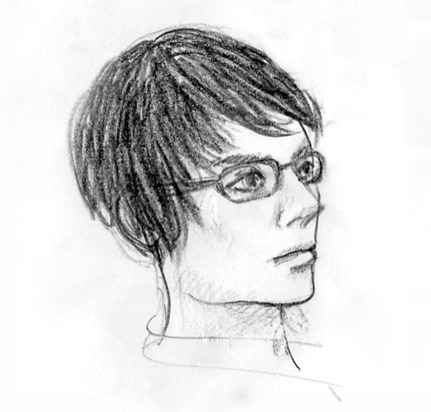
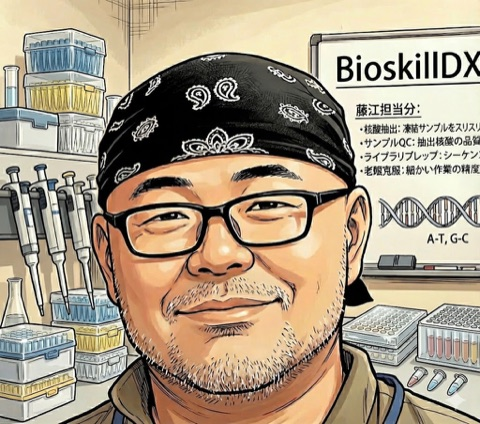

P-01類型 I · Observation
観察に基づく判断
サンプルの色・粘性・泡立ちなどを目で見て、次の工程の条件を分岐させる。目盛りには現れない判断。
e.g.「ここで止めるか、あと10秒続けるか」
生命科学実験の再現性を支えているのは、プロトコルに書かれない「現場の判断」です。BioSkill-Legacyは、その判断と勘所を体系的に収集・構造化し、教材・テンプレート・データセットとして次世代に引き渡します。
同じ手順を辿っても、同じ結果は得られない。条件のわずかな違いが実験の成功率を決め、熟練者は試料の状態を見て判断する。
この問題の多くは、実行に必要な情報がプロトコルに十分に含まれていないことに起因する。
熟練者は「どこを見るか」「何を変えるべきか」を判断しながら進められるため成功率が高い。一方、初学者はその判断に必要な情報にアクセスしにくく、同じ手順を実行しても失敗しやすい。BioSkill-Legacyは、その空白を埋めることを目的としています。
サンプルの色・粘性・泡立ちなどを目で見て、次の工程の条件を分岐させる。目盛りには現れない判断。
e.g.「ここで止めるか、あと10秒続けるか」
数値化されていないが、成功率を左右する微妙なチューニング。試薬ロット差、季節、湿度、その日の状態。
e.g.「今日のロットは少し薄めで」
環境・機器・試薬ロットに応じた、その場でしか判断できない微調整。プロトコルに書ききれない「現場の作法」。
e.g.「この機種だけ少し短めに回す」
BioSkill-Legacyは、Data → Model → Operation の3段で動く。継続的に集め、整理し、次世代へ引き渡せる形式に変換し続ける。
熟練者が実際に使っている判断基準や、 不記載になりやすい情報を継続的に集め、整理し、 次世代へ引き渡せる形式に変換する。
熟練者の現場で観察・聞き取り・多視点撮影を一体で実施。条件分岐の瞬間と、その判断根拠を捉える。
観察→判断→介入→結果のチェーンを取り出し、項目・根拠・分岐として再利用可能な形へ。
教材・テンプレートとして還元し、現場のフィードバックを受けて継続的に育てる。
(A) “書くべきこと”の確立 — プロトコルに含まれるべき項目を体系として固める。
(B) 判断プロセスの記録とモデル化 — 熟練者の判断を観察可能な単位で記録する。
プロトコルに「書かれるべき項目」と「根拠」を体系として確立する。スタイルではなく、内容にフォーカスする。
熟練者の判断（メンタルモデル）を、観察可能な単位で記録し、将来のワールドモデル構築へ接続する。
俯瞰・側面・対象クローズアップ・プロトコル画面・音声を同時取得し、条件分岐の瞬間と、その判断根拠を捉える。
4つのロールが上流から下流へ繋がり、運用ループによって継続的に更新される。図はその全体像を示す。
熟練者・研究室・企業との関係構築。LEGENDSレクチャー、Troubleshooting Night、Lab Hero Storiesによる発信と協力者の獲得。
熟練研究者による実験の実施・聞き取り・多視点撮影を一体で実施。俯瞰・側面・対象クローズアップ・プロトコル画面・音声を同時取得。
データスキーマ（メタデータ、手順ID、機材情報、環境条件等）の整備。保存・検索・再利用の可能性を担保する。
不記載情報を質問群・項目群・根拠として構造化。動画・注釈・結果指標との紐づけと、再利用可能な表現への変換。
熟練者の語りから不記載情報を取り出す
What / Why / When の項目に整理する
動画・音声・注釈に紐づけて保存する
結果指標（成功・失敗）に接続
テンプレ・項目集を継続的に育てる
BioSkill-Legacyは、参加した一人ひとりに具体的な見返りがある。あなたが熟練者でも、立ち上げ中の研究室でも、学生でも、メーカーでも — 受け取れる価値と、最初の一歩がある。
口頭で消えていた判断が、引用される知見になる。
次のメンバーが、あなたを呼ばずに立ち上がる。
先輩の頭の中が、手元で読める。
現場で何が詰まっているか、ようやく見える。
参加の入り口は複数ある。5分で投稿できる事例から、共同検証・拠点利用まで。あなたの関わり方を選んでほしい。
失敗談・突破口・現場の工夫 — いただいた事例は、収集開始後に整理・構造化し、教材として還元していきます。匿名で構いません。
現在は準備期間中です。事例の投稿は、当面 BioSkillDX 共通のお問い合わせフォームで受け付けています（まずは関心のご連絡として歓迎します）。本格的な事例収集の開始は、追ってこのページでお知らせします。
何が見えて、どう判断し、何を変え、どうなったか。観察と介入のチェーン。
現場で試行錯誤して見つけた突破口を共有する。再利用可能な突破事例。
道具や環境の改善で成功率を上げた事例。小さな工夫こそ価値がある。
短時間の聞き取り、プロトコルレビュー、質問項目へのコメント。
最小構成（俯瞰・側面・対象・プロトコル・音声）での撮影。
結果指標（成功・失敗・QC）と紐づけたケーススタディ作成。
整備されたベンチ・機材環境での実験の実施と記録。
BioSkill-Legacyは、BioSkillDXの中で、生命科学領域の研究者・データエンジニア・コミュニケーターが手を組んで進めている研究プロジェクトです。

